Tánger: Historia, Cultura y Modernidad
Introducción
Tánger es una ciudad fascinante ubicada en el norte de Marruecos, entre el océano Atlántico y el mar Mediterráneo. Su posición estratégica la ha convertido durante siglos en un punto de encuentro entre África y Europa, lo que le ha dado una rica mezcla cultural, histórica y arquitectónica.
Desde los fenicios hasta los colonos europeos, pasando por las influencias árabes, Tánger ha sido un crisol de civilizaciones. Hoy en día, la ciudad es un lugar donde la modernidad y la tradición coexisten, con un vibrante panorama económico y cultural que la posiciona como uno de los centros más importantes de la región.
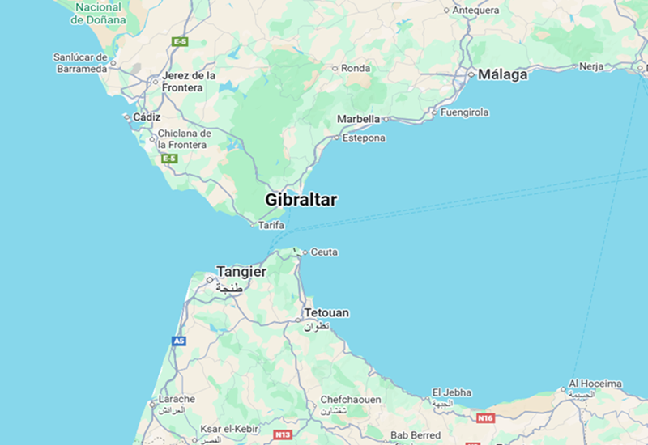
Mapa de Tánger, mostrando su ubicación estratégica entre el océano Atlántico y el mar Mediterráneo.
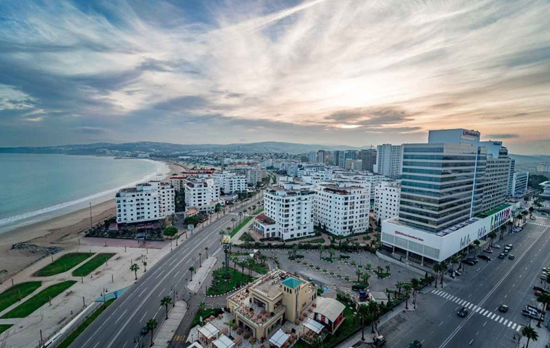
Panorama actual de Tánger, una ciudad moderna que sigue siendo un crisol de culturas.
Historia y cultura
Tánger es una ciudad muy antigua, con más de 3.000 años de historia.
Fue ocupada por fenicios, romanos, árabes, portugueses, españoles y franceses, lo que le da una cultura rica y diversa.
La Medina es la parte más famosa, con calles estrechas, casas blancas y muchos comercios tradicionales.
También destacan el Cabo Espartel y la Cueva de Hércules.
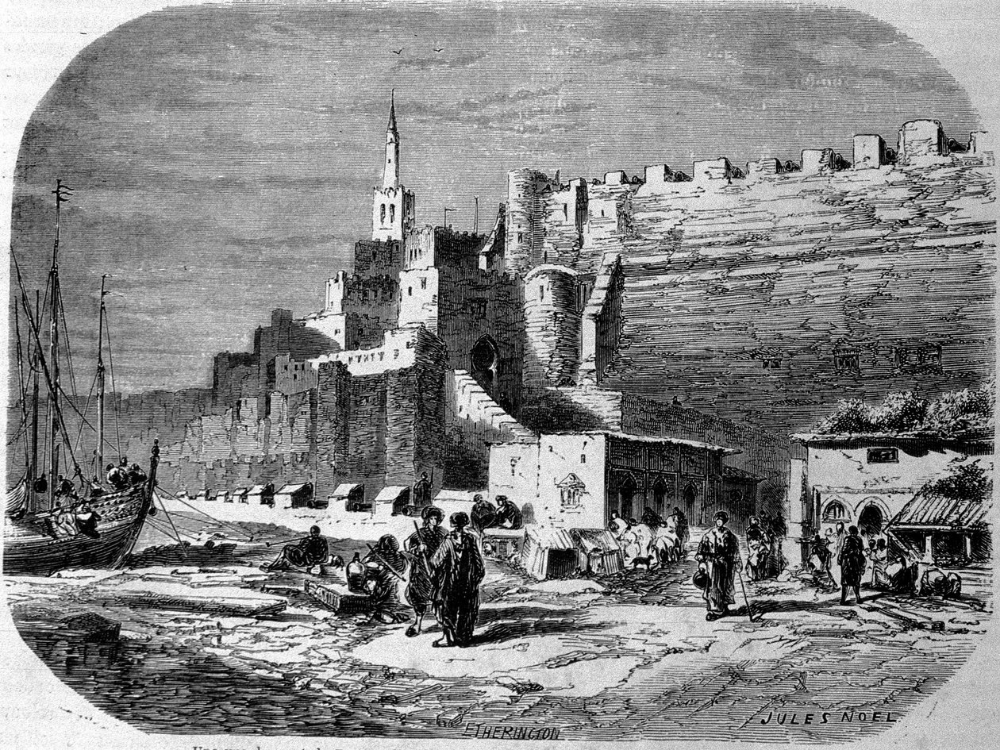
Kasabah de Tanger 1860.
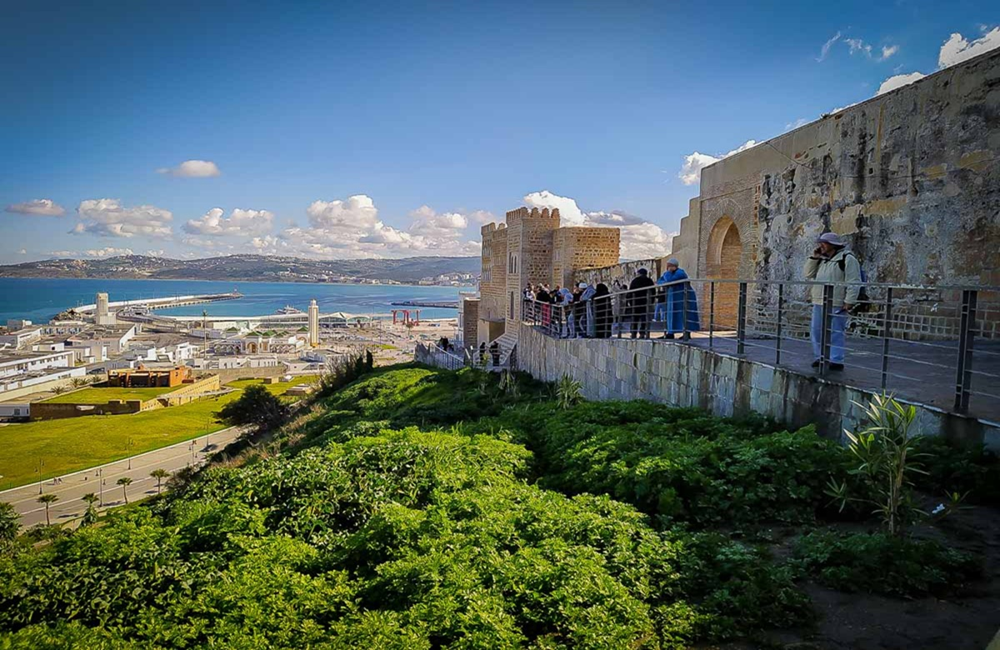
La Medina antigua (Kasabah) de Tánger, famosa por su arquitectura tradicional.
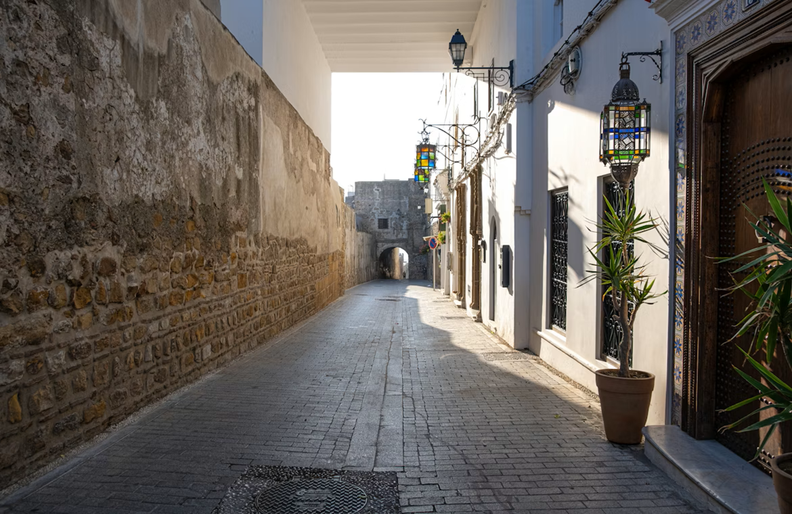
Casas tradicionales en la Medina de Tánger, con fachadas blancas.
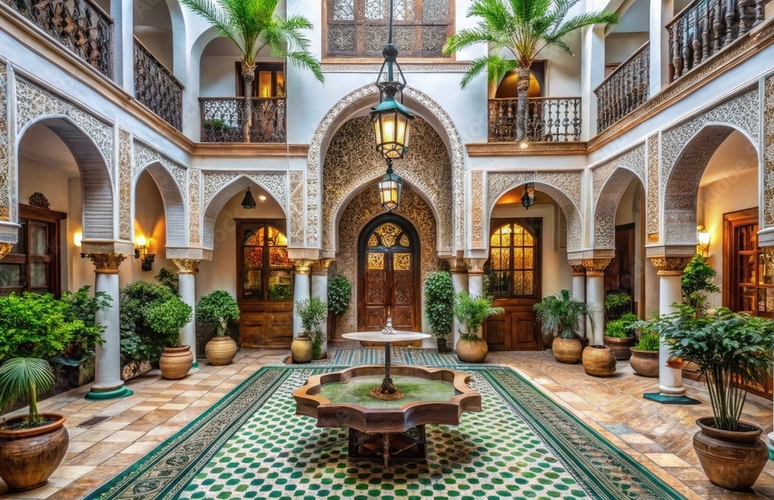
Vista del interior de una casa típica en la Medina de Tánger, mostrando la estructura tradicional.
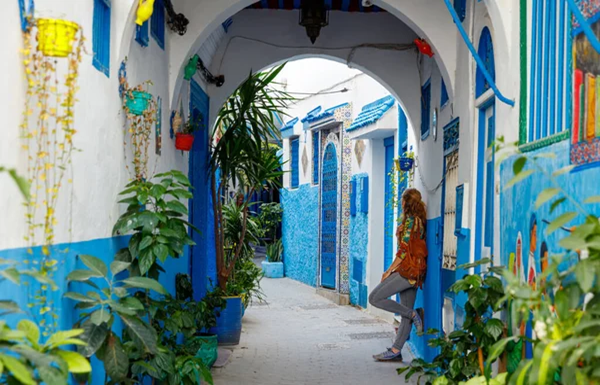
Calle empedrada típica de la Medina de Tánger
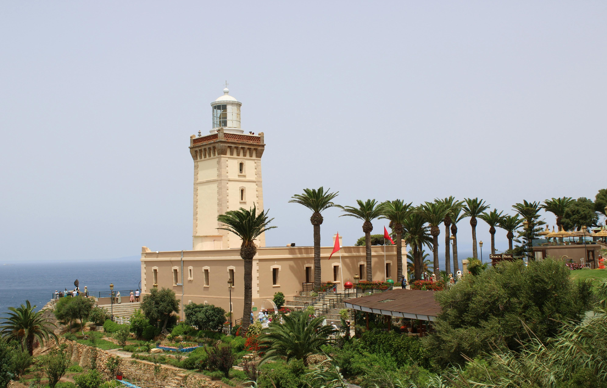
El Cabo Espartel, punto donde se encuentran el océano Atlántico y el mar Mediterráneo.
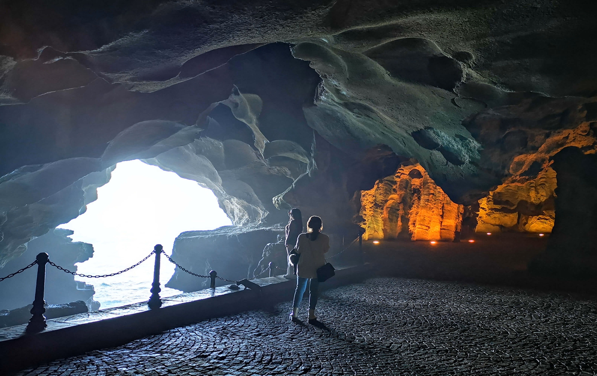
La Cueva de Hércules, famosa por su forma de mapa de África y su conexión con mitos antiguos.
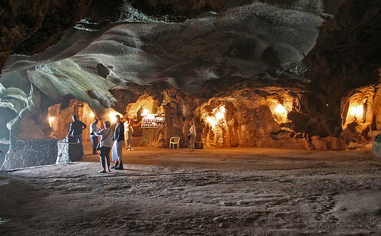
Otra vista de la Cueva de Hércules, con su entrada característica hacia el mar.
Industria y desarrollo
Tánger se ha convertido en un centro importante para la industria y la economía.
Renault
La fábrica Renault de Tánger es una de las más grandes de África.
En 2024 produjo alrededor de 400.000 coches, principalmente Renault Clio y Renault Express.
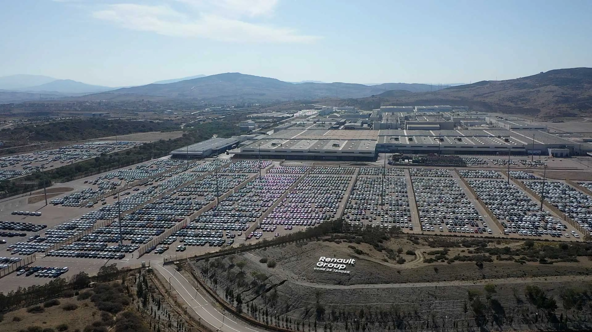
La fábrica Renault en Tánger.
Sector aeronáutico
Empresas como Safran, Eaton, TDM Aerospace producen piezas para aviones en Tánger.

Instalaciones de producción aeronáutica en Tánger, donde se fabrican piezas y componentes para la industria global de la aviación.
Otros sectores
- Fábricas textiles (Inditex — el grupo dueño de Zara)
- Empresas de electrónica (Electrical Components International (ECI))
- Centros logísticos (Calsina Carré)
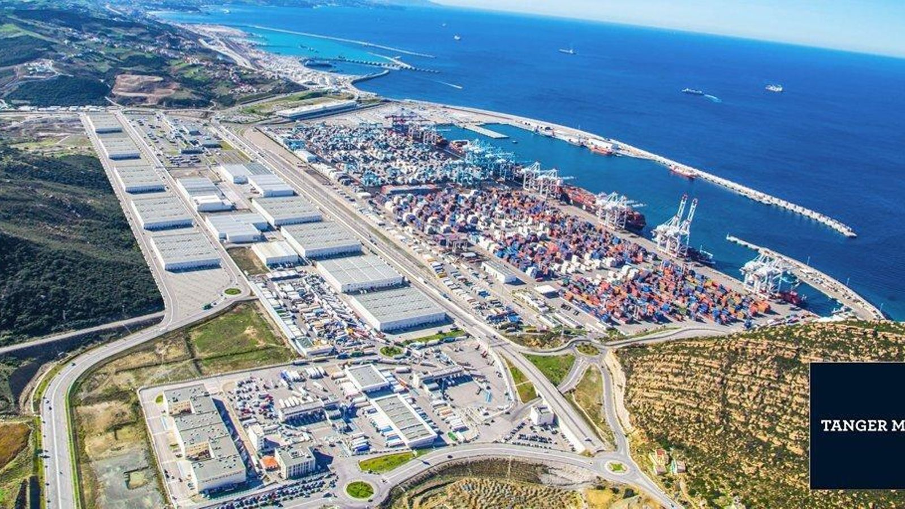
El Puerto Tanger Med, clave para el desarrollo logístico de la ciudad, conecta Tánger con mercados globales y facilita el comercio de productos industriales.
Personas famosas
Tánger ha visto nacer o vivir a muchas personas importantes:
Ibn Battuta (explorador)
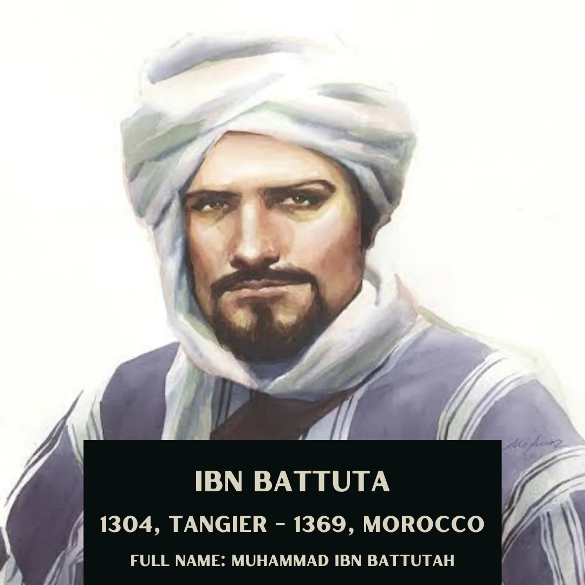
Ibn Battuta, uno de los exploradores más importantes de la historia, nació en Tánger y viajó por gran parte del mundo musulmán y más allá.
Mohamed Choukri (Escritor)
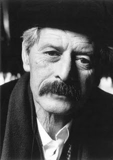
Mohamed Choukri, un renombrado escritor marroquí, es conocido por su obra "EL PAN A SECAS", que refleja la vida en Tánger.
Driss Chraïbi (Escritor)
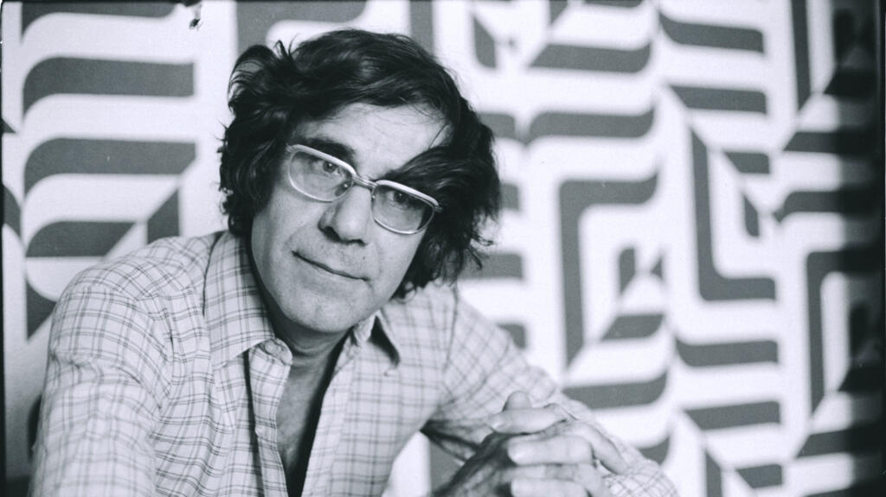
Driss Chraïbi, escritor marroquí de renombre, ha sido una figura clave en la literatura moderna del Magreb, con obras que exploran la identidad y la sociedad marroquí.
Paul Bowles (Escritor estadounidense)
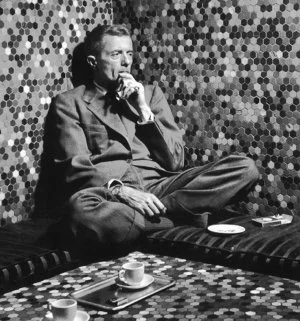
Paul Bowles, escritor estadounidense y compositor, pasó muchos años en Tánger, donde escribió algunas de sus obras más importantes (the sheltering sky)
Jean Genet (Novelista francés)
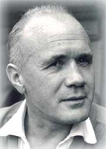
Jean Genet, escritor y dramaturgo francés, vivió en Tánger durante varios años, influenciado por su ambiente multicultural y su exilio (Notre Dame des Fleurs).
Conclusión
Tánger es una ciudad que combina historia y modernidad de forma única. Con más de 3.000 años de historia, ha sido testigo de diversas civilizaciones que han dejado su huella en su cultura y arquitectura. Hoy, Tánger se está consolidando como un centro de innovación y crecimiento económico, gracias a su ubicación estratégica entre África y Europa y su expansión industrial.
Con un futuro lleno de oportunidades, Tánger continúa avanzando hacia la sostenibilidad y la tecnología, mientras mantiene su rica herencia cultural.
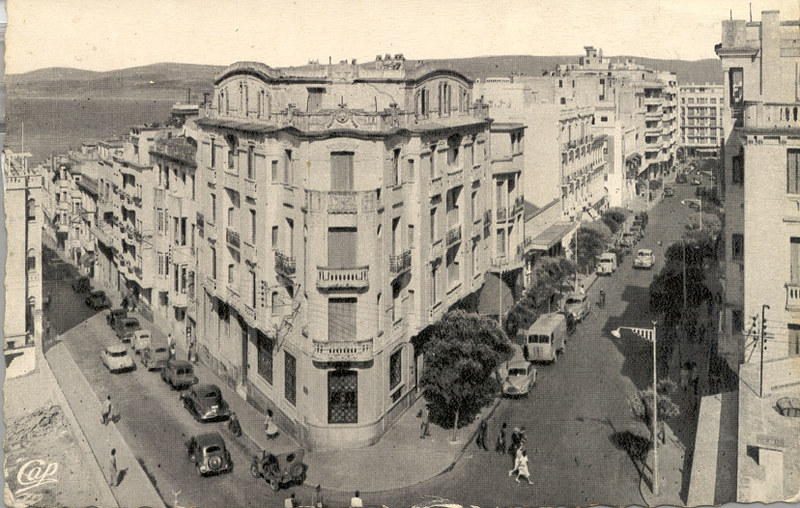
Tánger en 1949, una ciudad con un pasado lleno de historia y culturas diversas.
Tánger hoy: una ciudad moderna y dinámica, un punto de convergencia entre el pasado y el futuro.